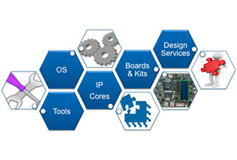

Developing software for Altera SoC devices is similar to developing for other ARM Cortex-A MPCore based processors in terms of the tool chain used, development flow, and software ecosystem available.
The FPGA portion of the device can be considered much like a RAM device in that it needs to be loaded (i.e. configured). Once configured, custom hardware in the FPGA can be treated as memory-mapped peripherals when accessed under program control.
Fundamentals of SoCs
Altera SoCs are unique in that the FPGA portion of the device can be customized by adding hardware functions. Imagine for example a device with multiple copies of a peripheral (e.g. 20 UARTs), several hardware accelerators (e.g. FIR, FFT, image processing), or some combination of both.
For the embedded software developer this means the following:
- Software can configure (and re-configure) the FPGA hardware at run time.
- Custom hardware in the FPGA can be accessed as memory-mapped peripherals by the processor.
- Software support for the custom hardware must be provided in the board support package.
The sections below cover some of the key topics for SoC software development:
CPU Boot
HW/SW Handoff
Configuring the FPGA
Accessing FPGA HW
CPU Boot Flow
A typical boot flow includes the following stages:
- BootROM
- Preloader
- Boot Loader
- OS or RTOS
The boot process always begins with the BootROM and proceeds to the Preloader and (typically) a boot loader, OS, and application software.
BootROM
On power up, the processor executes the BootROM code which resides in on-chip ROM. The primary role of the BootROM is to initialize the hardware components needed to load the next stage boot software, the Preloader. The BootROM fetches the Preloader binaries from serial NOR flash, NAND flash or SD/MMC flash memory based on the boot select (BSEL) pins. The BootROM uses the clock select (CSEL) pins to determine the clocks to be used.
Instead of running the Preloader from Flash, the BootROM can optionally:
- Run Preloader code stored in FPGA memory
- Run code from RAM - this option can be used only on Warm reset
Preloader
The main functions of the Preloader are:
- Initialize the SDRAM interface including SDRAM’s PLL configuration and interface calibration.
- Copy the Bootloader image from NAND, SD/MMC or serial NOR flash to SDRAM.
- Pass control to the Bootloader.
In addition to the above, the Preloader also:
- Configures the processor's I/Os through the Scan Manager.
- Configures the HPS pin muxing through System Manager (configurable by Qsys).
- Re-configures the PLLs based on user specified settings (configurable by Preloader Generator).
- Releases all, or specific, peripherals from reset through Reset Manager (configurable by Qsys).
- Initializes the required flash controller (either NAND, SD/MMC or QSPI) based on boot options.
Bootloader
The main functions of the boot loader are:
- Set up the OS environment.
- Fetch the OS image from NAND, SD/MMC, serial NOR flash, Ethernet through TFTP, or USB mass storage.
- Copy the boot image to SDRAM and pass control to subsequent boot image.
- Provide a console for user operations such as modifying the Device Tree Blob (DTB) and boot arguments.
The Bootloader used in this example is U-Boot. U-Boot is an open source, primary boot loader used in embedded devices. U-Boot is licensed under GPL as it is an open source framework. For more details about U-Boot, please refer to http://www.denx.de/wiki/U-Boot/Documentation.
For more details visit: Rocketboards.org > GSRD Boot Flow

Hardware-to-Software Handoff
Files generated by the hardware design tools (i.e. Quartus & Qsys) are "input" files from which the the Preloader, DS-5 debug information (i.e. details about FPGA peripherals), and the device tree are generated.
Preloader Generation
The Preloader Generator tool creates a custom Preloader based on the settings made by the hardware engineer (e.g. HPS peripherals used, SDRAM settings, etc.).

For more details see: SoC EDS User Guide > Section 7
System View Description (.svd) File Generation
A convenient feature of the ARM DS-5 debugger is the ability to access registers of soft IP cores within the FPGA fabric using Cortex Microcontroller Software Interface Standard (CMSIS) System View Description (.svd) files. With this feature, you can easily read and modify the soft IP registers directly from the DS-5 debugger the same way you can with processor registers.
Device Tree Generation
A Device Tree is a data structure that describes the underlying hardware to an operating system - primarily Linux. By passing this data structure to the OS kernel, a single OS binary may be able to support many variations of hardware. This flexibility is particularly important when the hardware includes an FPGA. The generated Device Tree describes the HPS peripherals, selected FPGA Soft IP, and peripherals that are board dependent.
For more details visit: Rocketboards.org > Device Tree Generator
Configuring the FPGA
The FPGA can be configured (or re-configured) in several ways:
- From a dedicated external configuration flash memory (serial or parallel)
- With the Quartus Programmer tool (JTAG)
- From software (e.g. Preloader, UBoot, Linux, etc.)
In the Atlas-SoC reference design, the FPGA is configured by U-Boot as illustrated in the code snippet below:
echo ---Booting ATLAS SOC GHRD---
echo ---Programming FPGA---
# Load rbf from FAT partition into memory
fatload mmc 0:1 $fpgadata ATLAS_SOC_GHRD/output_files/ATLAS_SOC_GHRD.rbf;
# Program FPGA
fpga load 0 $fpgadata $filesize;
For more details visit: Rocketboards.org > Programming FPGA from HPS
Device "Boot"
Since the device contains both a processor system and FPGA, a full device "boot" consists of booting the CPU and configuring the FPGA. Cyclone V SoC supports three boot options, all of which are supported by the Atlas-SoC board hardware:
- Independent CPU/FPGA boot
- CPU boots first
- FPGA boots first
Independent Boot
The CPU is booted, and FPGA configured independently, just as thought they were two independent, discrete devices. Each subsystem monitors the bridge to determine when the other is alive and ready to use.


HPS / FPGA Interface Bridges
The CPU and FPGA can communicate across three unique, memory-mapped interface bridges.
- HPS-to-FPGA Bridge: This bridge provides a wide, high bandwidth interface for the CPU to send data to the FPGA (i.e. CPU is the master).
- FPGA-to-HPS Bridge: This bridge provides a wide, high bandwidth interface for the FPGA to send data to the CPU (i.e. FPGA is the master).
- Lightweight HPS-to-FPGA bridge: This bridge provides an alternate path for the CPU to initiate transactions with the FPGA. It is intended to carry traffic that is more random in nature (i.e. not a continuous stream of data). This is the typical port used to communicate with the control and status registers of "soft" IP cores (peripherals) in the FPGA.

Accessing FPGA Peripherals
The register interface of memory-mapped peripherals implemented in the FPGA logic can be accessed in several ways:
Application Software Development
- Bare-metal software using Hardware Libraries (HWLibs)
- OS drivers
Test & Debug (R/W registers via JTAG)
- Software debugger - During the HW/SW handoff, a .svd file is generated that tells ARM DS-5 (Altera Edition) about the peripherals in the FPGA and allows the debugger to access them just like it does for CPU registers.
- System Console - This tool is provided for the hardware developer so that they can access IP cores in the FPGA during hardware debug. It
Other Interfaces
Interrupts
You can configure the HPS component to provide 64 general-purpose FPGA-to-HPS interrupts, allowing soft IP in the FPGA fabric to trigger interrupts to the MPU’s generic interrupt controller (GIC).
GPIO Peripheral
Signals from logic in the FPGA can be connected to the general purpose IO (GPIO) peripheral of the HPS. This is an input-only interface with 14-bit wide width.
General Purpose Input Register
Up to 32 signals from the FPGA can be connected to a general purpose input register and read under software control.
General Purpose Output Register
The general purpose output register can be used to send data to the FPGA under software control.


Development Tools
The specific tools used to develop and debug embedded software for Altera SoC devices vary depending on whether you are developing software to run on the Linux OS, or bare-metal / RTOS. Be sure to check the Altera web site (here) for details on the latest development tools available for SoC devices.
Linux
Bare-Metal or OS/RTOS
Design Utilities
SoC Embedded Design Suite (SoC EDS) and ARM DS-5 Altera Edition provides a complete development environment for Altera SoC FPGAs.
ARM DS-5 Altera Edition Eclipse-based IDE
Develop:
Build:
Linaro GCC toolchain
Debug:
Profile:
ARM Streamline Performance Analyzer
SoC EDS and DS-5 Altera Edition provides the complete SoC bare-metal development environment. This includes the following:
Develop:
Build:
Debug:
Several design utilities are provided to simplify common development tasks including:
Ecosystem
Altera SoC devices inherit the rich ecosystem available for ARM software development. In addition to operating systems and development tools, a wide range of IP cores (for use in the FPGA), development boards and design services partners are available. To see the complete ecosystem list, visit the Cylone V SoC page at Altera.com (here) and navigate to the Ecosystem page. There, you will learn about:
- Operating system support
- Development Tools
- "Soft" IP Cores that can be added to the FPGA (e.g. peripherals, interfaces, hardware accelerators, and processors)
- Design services partners
- Development boards
- Systems-on-Module (SOM)
Training
Rocketboards.org
- Atlas-SoC Web Page
- Workshops:
- Introduction to SoC
- Building Linux for SoC devices
- Linux Device Drivers for SoC
Terasic DE0-Nano-SoC Tutorials
Tutorials developed by Terasic for the DE0-Nano-SoC version of this board are available at http://soc.terasic.com; download and install the CD ROM. The learning resources include:
- Quick Start Guide
- Getting Started Guide
- User Manual with tutorials:
- My First FPGA
- My First HPS
- My First HPS-FPGA

FPGA Primer
Learn how FPGAs work, the history, and the future of FPGAs in system design including heterogeneous computing and OpenCL.
Download this eBook to learn:
- The pros and cons of using FPGAs
- The modern design flow of FPGAs
- Ways to use FPGAs as functional blocks in your system
On-Line Training (Altera.com)
- New to Altera? Start Here
- Embedded Software Designer Curriculum
- Embedded Hardware Designer Curriculum
DE0-Nano-SoC University Materials
Educational materials intended for use in courses on digital logic, computer organization, and embedded systems.
"How-To" Videos
If your PC is connected to the Internet you can access videos from a YouTube play list.
ARM DS-5 AE
SDK For OpenCL
Chinese Language
Japanese Language
To select a video, click the icon in the top left corner of the video frame and scroll to the desired topic.
To select a video, click the icon in the top left corner of the video frame and scroll to the desired topic.

Ut eget felis
Sed velit congue viverra. Sed porta mattis luctus. Curabitur feugiat pharetra sem eu iaculis. Phasellus venenatis volutpat arcu id placerat. Aliquam fringilla ligula eu purus lacinia at volutpat nunc malesuada. Nunc a augue ac orci tempus commodo.